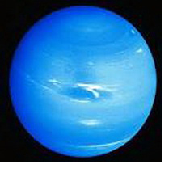

|
Нептун в гороскопе
Нептун - это планета тайн и секретов. Нептун, в основном, властвует над подсознанием и глубинными пластами души. Он дает утонченную чувствительность, создает душевный настрой, дает остроту восприятий и глубину впечатлений, вдохновения и эмоций, обогащает фантазию, дает живость и яркость воображения, усиливает интуицию, навевает вещие сны. Именно Нептун вводит в состояние экстаза, способствует погружению в транс. Состояние опьянения также находится в ведении Нептуна.
Положительное влияние Нептуна проявляется в вашем блеске и загадочности, художественном воображении, мечтах и прозрениях. Отрицательное влияние ответственно за склонность ко лжи, мошенничеству, предательству и фальши.
Положение этой планеты в вашей карте рождения указывает на то, каковы ваши идеалы и цели, обладаете ли вы даром ясновидения и обаянием, на которое реагируют окружающие. Нептун дарует глубину понимания, экстрасенсорные способности, творческие таланты. В отличие от всегда неожиданного и мощного влияния Урана, энергия Нептуна проявляется тонко, кратковременно, духовно и мистически. Многие астрологи утверждают, что Нептун связывает человека с высшим разумом. Если эта планета занимает в гороскопе сильное положение, вы, вероятно, будете увлекаться мистикой, парапсихологией или толкованием снов.
Характеристика Нептуна в Козероге представлена ниже:
Нептун в Козероге
Такое расположение планет попадает в 14-летний период, когда обычно рождаются люди консервативные, приверженные традициям в духовных стремлениях и религиозных взглядах. Эта возрастная группа, как правило, возвращается к традиционным основам в религии, а также традиционным стилям в музыке и искусстве. Классическая музыка и литература получают новую жизнь в период Нептуна в Козероге. Нередко другие возрастные группы критикуют эту за недостаток сердечности и участливости. На высших этажах общества, для данной группы, характерна необычайная хитрость, манипуляторство и обман, существующей в правительстве и большом бизнесе. Нептун был в Козероге с 1820 по 1834 год и не так давно — с 1984 до 1998 года. В этом периоде появилась на свет доктрина Монро, организованные восстания рабов в Америке, строительство железных дорог. Тогда же были изобретены цемент, спички, плуг и борона. Люди, рожденные с Нептуном в Козероге, как правило, находятся под большим влиянием родителей, традиционны и старательны. Обладают глубоким чувством ответственности и самодисциплины, а также пытаются применить свои творческие способности в практических и конкретных целях. Если силы Нептуна сильнее сил Козерога, духовная и поэтическая мечта становится органической частью повседневной жизни. В такое время происходит много практических открытий, появляются новые формы управления и новые политические концепции.
|


 Тайна имени
Тайна имени Нептун в знаке Козерог
Нептун в знаке Козерог